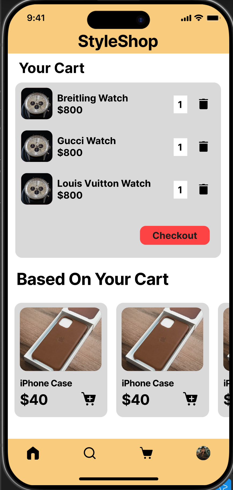
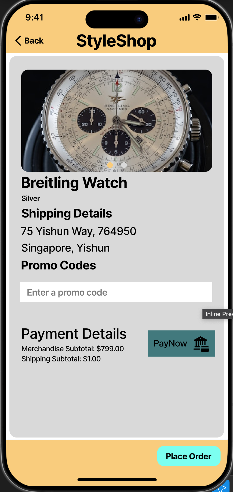

StyleShop App
In this project, I created interactive UI/UX designs for a fictional company, StyleShop!
I used my knowledge and experience in design to create a comfortable and cozy feeling app experience when users want to shop on the app, by using warmer color tones and having a more spacious approach to the structuring of the app.


